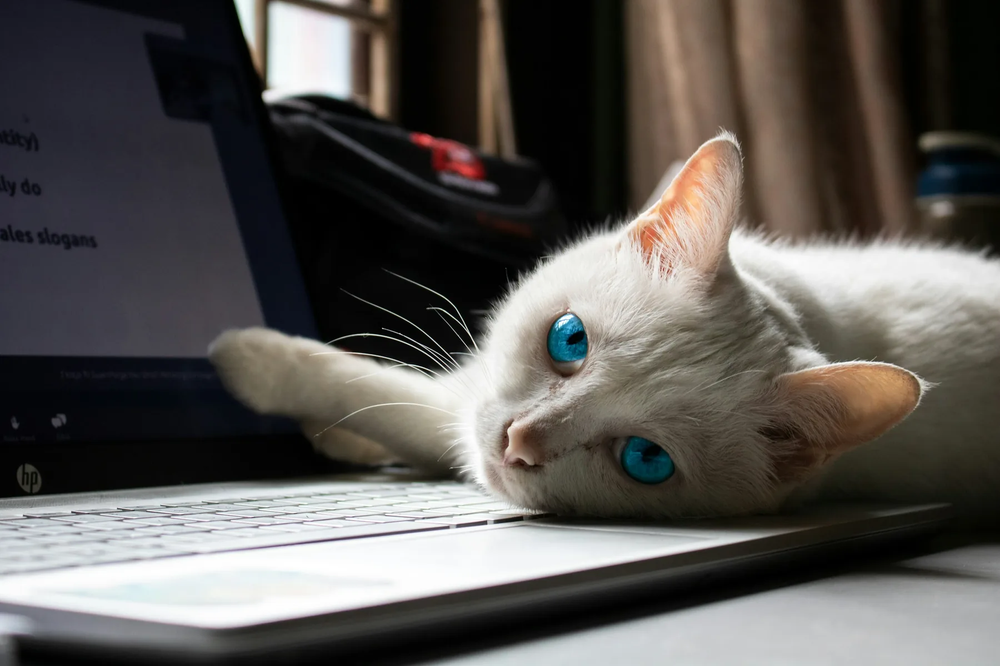
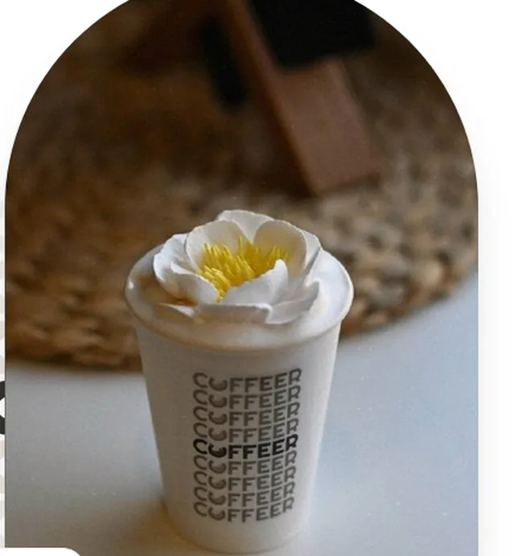
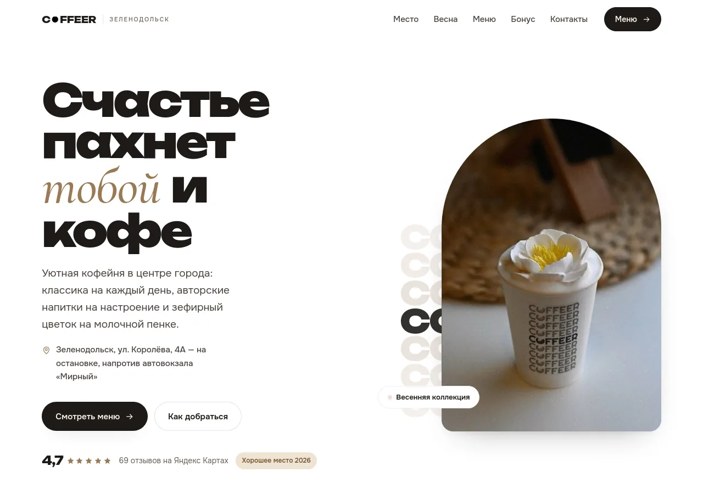

Сайты для маленького бизнеса
Кофейням, магазинам, кондитерским. Руками, без конструктора: одна страница, которая открывается за секунду и не ломается.
Задача старая.
Взгляд новый.
«Магазину нужен сайт» — задача не новее двухтысячных. Обычно её закрывают шаблоном: страница вроде есть, а толку нет. Потяните разделитель и сравните.
Добро пожаловать
на наш сайт!
Уважаемые посетители! Сайт находится в стадии наполнения. Приносим извинения за временные неудобства.
Сайт оптимизирован под разрешение 1024×768
Кофе
на Королёва
Открыто до 21:00. Три минуты от автовокзала.
Посмотреть меню
Тяните мышью, пальцем или стрелками с клавиатуры.
Что получилось
у КофеР
Кофейня в Зеленодольске. Сайт живой, открывается прямо сейчас — не картинка в портфолио.

- Кто
- Кофейня «КофеР», Зеленодольск, улица Королёва, 4А — на остановке, напротив автовокзала.
- Что было нужно
- Чтобы человек с телефона за полминуты понял, где это, что здесь пьют и как дойти.
- Что сделали
- Одну страницу: меню с ценами, дорога, бонусная карта, живые фотографии, ссылки на телеграм и карты.
- Как устроено
- Один HTML-файл. Без сборки, без CMS, без плагинов. Хостинг бесплатный, обновляется за минуту.
Что делаем
Лендинг
Одна страница, которая доводит до звонка или заказа.
Сайт-визитка
Кто вы, где вы, когда открыто и как дойти.
Меню и витрина
То, что у вас есть, — читаемо с телефона одной рукой.
Правки
Меняем тексты, цены и фотографии, когда у вас что-то поменялось.
Домен и хостинг
Подключим, настроим и объясним, что где лежит.
Скорость
Открывается на старом телефоне и на плохом интернете.
Как это происходит
Четыре шага, все видны сразу — чтобы вы понимали, где мы находимся, а не гадали.
Пишете
В телеграм, своими словами. Техническое задание писать не нужно — разберёмся вопросами.
Считаем
Называем срок и цену до начала работы, а не после. Если задача не наша — скажем прямо.
Делаем
Показываем черновик на настоящей ссылке. Правим, пока вам не станет нравиться.
Живёт
Выкладываем, отдаём доступы, показываем, как менять текст самим. Остаёмся на связи.
Напишите
Нас немного, и сайт делает тот же человек, с которым вы переписываетесь. Отвечаем сами, без бота и без отдела продаж.